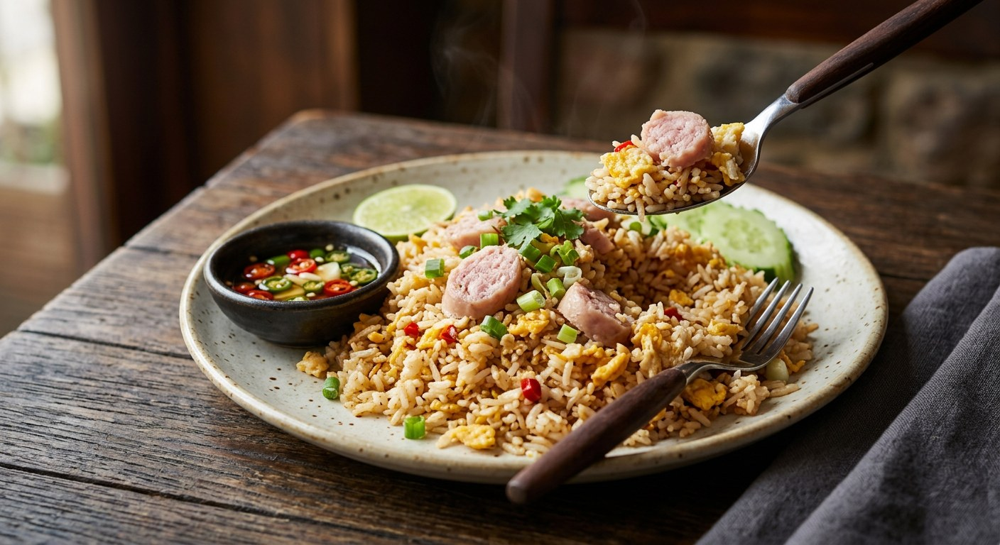

The fried rice Thailand orders when plain khao pad needs teeth — sour fermented pork sausage fried with garlic and egg, chilled rice tossed through, and prik nam pla on the side.

Khao pad naem starts where every other Thai fried rice starts — garlic, egg, day-old rice — and then it adds the ingredient that changes the register: naem, the northern-style fermented pork sausage with sticky rice and garlic, sour from its three or four days of lactic fermentation. The same sour, garlicky tang that makes naem a beer snack makes it a fried-rice protein, and the result is the one khao pad that needs no extra souring — the sourness is already inside the meat. Aroifin calls it รสจัดจ้าน เปรี้ยวนิด เผ็ดหน่อย: bold, a little sour, a little hot.
The details matter more than the ingredient list. Every Thai source agrees the rice must be chilled overnight — TrueID's writer spells out the reason: cold rice keeps the grains separate, เม็ดร่อนซุย, instead of clumping into a sticky mass. And Wongnai's cook fries the naem in hot water first — crumbled with a spatula in half a cup of boiling water until it dries and browns, and only then does any oil go in. The water does the breaking-up work the oil can't, and the naem fries instead of stewing.
Then there is the naem itself. TrueID's recipe draws the line that most Thai cooks know but rarely write down: naem korn, the compact block, gets fried before the rice so it cooks through; naem sen, the stringy shredded version, can join after the rice without turning to rubber. And the dish is finished the way all good khao pad is finished — with prik nam pla, bird's eye chillies in fish sauce with lime and shallot, the condiment Kapook's cook pairs with cold cucumber and a squeeze of lime over the top of the bowl.
| Thai | English | Amount |
|---|---|---|
| ข้าวหอมมะลิ (แช่เย็น) | Cooked jasmine rice, chilled | 3 cups |
| แหนม (ก้อน 50 กรัม) | Naem, block, 50 g each | 3 sticks |
| ไข่ไก่ | Eggs | 2 |
| กระเทียมสับ | Garlic, chopped | 1½ tbsp |
| น้ำมันสำหรับผัด | Oil for frying | 4 tbsp |
| ซีอิ๊วขาว | Light soy sauce | 1 tbsp |
| ซอสหอยนางรม | Oyster sauce | 1 tbsp |
| น้ำตาลทราย | Sugar | ½ tbsp |
| น้ำมะนาว | Lime juice (if the naem isn't sour enough) | ½ tbsp |
| พริกไทยป่น | Ground white pepper | to taste |
| ผักชี | Coriander, for sprinkling | 1 cup |
| พริกขี้หนูซอยละเอียด | Bird's eye chillies, finely sliced (for prik nam pla) | 1 tbsp |
| น้ำปลา มะนาว หอมแดง | Fish sauce, lime, shallot (for prik nam pla) | to taste |
The water-fried batch (Wongnai, Nickktwf): 6 servings — jasmine rice chilled one night, 5 sticks naem (pork-chicken mix), ½ cup hot water, 2 tbsp vegetable oil, 1 head pounded garlic, 6 eggs, 1 tbsp pork seasoning powder, 1 tbsp sugar, seasoning sauce (green cap and Golden Mountain) to taste, sliced spring onion. The weighed batch (Aroifin): 1 serving — 200 g chilled rice, 150 g naem, 2 eggs, 30 g kailan tops, 30 g tomato, 4 garlic cloves, 3 tsp fish sauce, 1 tbsp oyster sauce, 2 tsp sugar; Aroifin also publishes per-serving nutrition: 1,120 kcal, 110 g carbs, 54 g fat, 40 g protein.
Water first or oil first. Wongnai's cook crumbles the naem in boiling water and fries it dry before any oil goes in — the water breaks the sausage apart, then the browning happens in fat. Every other source starts with oil and drops the naem straight into the hot fat. Wongnai's naem comes out drier and chewier; the oil-first naem stays softer and juicier.
When the naem goes in. TrueID fries the naem before the rice (and says string naem can wait until after); Kapook's second recipe adds naem and carrot together before the rice; Aroifin holds the naem until last, after the rice is already seasoned and coated with egg. The later it goes in, the less it dries out.
The egg. Kapook's Pantip recipe and Aroifin crack the eggs in after the rice and stir until the egg coats the grains — ไข่เคลือบข้าว, the golden-coat school. Wongnai, TrueID and Kapook's other recipe scramble the egg first and then add the rice. Same two eggs, visibly different rice.
Vegetables or not. Wongnai, TrueID and Kapook's big recipe use none beyond garnish. The other Kapook recipe and Aroifin add tomato, plus onion and carrot (Kapook) or kailan tops (Aroifin, which insists on the tender tips of kailan, not the fibrous stems).
The seasoning system. TrueID: soy + oyster + sugar. Aroifin: fish sauce + oyster + sugar. Wongnai: pork seasoning powder + sugar + two brands of seasoning sauce. Kapook: soy + seasoning powder + unrefined sugar. Five sources, five combinations — the only constant is something salty, something sweet.
The sourness fix. TrueID adds lime juice to the fry if the naem isn't sour enough; Kapook serves a lime wedge to squeeze at the table; everyone else trusts the naem to do the souring alone.
This recipe is translated from the following Thai-language sources. Where they disagree, we've said so.
1. TrueID Food — "ข้าวผัดแหนม เมนูอร่อย งบน้อย ที่ทำได้ง่าย ๆ ไม่ยุ่งยาก.." (the recipe used here) — food.trueid.net
2. Wongnai — "สูตร ข้าวผัดแหนม พร้อมวิธีทำโดย Nickktwf" (the water-fried naem technique) — wongnai.com
3. Kapook Cooking — "ข้าวผัดแหนม เมนูคุ้ยตู้เย็น แม้เครื่องจะน้อยแต่ก็อิ่มและอร่อย" by คุณ Ananya Amy_1994 (cucumber-and-lime serve, light seasoning) — cooking.kapook.com
4. Kapook Cooking — "ข้าวผัดแหนม เมนูสุดง่ายกินอร่อยทำเองได้ทุกวัน" by คุณ NUTCHANART_CH (Pantip) (the butter and egg-coat version) — cooking.kapook.com
5. Aroifin (อร่อยฟิน) — "วิธีทำข้าวผัดแหนม รสจัดจ้าน เปรี้ยวนิด เผ็ดหน่อย อร่อยจนต้องเบิ้ล" (the weighed batch, kailan tops and nutrition) — aroifin.com